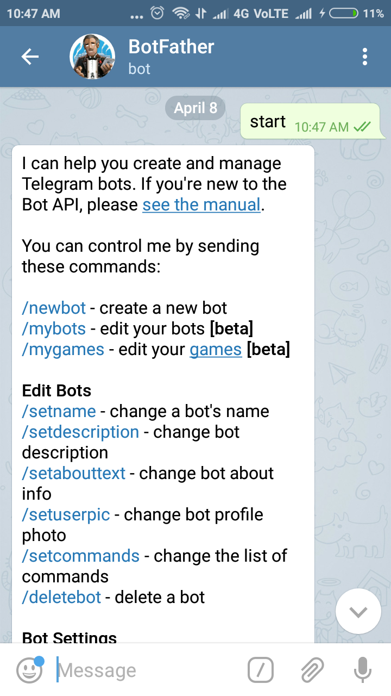
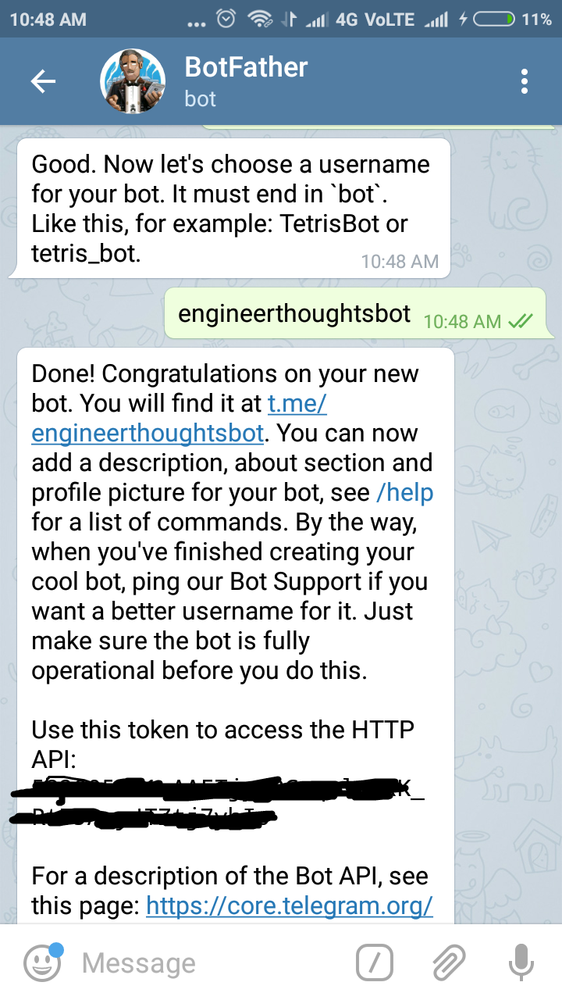

Make IOT Simple
by Aranganathan
Step 1 Introduction
In the current generation Internet is everything. Internet of Things plays a major role in the current world.
Without wasting much time, we can move into the practical working of the IOT. Here we are going to control the led and also other exciting things from the telegram message.
Step 2 Creating Bot in Telegram
1.In this step install the Telegram app in the phone. Installation is as simple as the whats app installation.
2.In the Telegram search for the Bot father and create a new bot by following the screenshots below.


3.Finally copy the HTTP API token.(do not share with others) and enter start in the bot
Step 3 Installing bot in the raspberry pi
Thus bot is created and it must be run on any one of the device so that for any message we send it will respond accordingly.
Here we are using the raspberry pi with the Api key and programming it in the python code. (It can also be run in our normal operating system )
1.Installing the telegram module on the raspberry pi
Before we start running the bot on the raspberry pi make sure you are running the proper version of the python 2. Also If you have any doubts regarding the initialization of the Raspberry pi you may look at this first 2 steps in this tutorial of mine
To install the telegram module in the python in the command line of the raspberry pi enter following (the module name is telepot)
sudo pip install telepot
2.Execute the python script
The Python script is executed in the command line using the following command
sudo python telegrambot.py

Step 4 Code part
Thus when we send the message to the bot, it responds coresspondingly. In the code we are going to teach the bot to respond to our commands. Here I am not going to teach you how the python script works as it would be more explanatory.
import RPi.GPIO as GPIO
import time, datetime
import telepot
from telepot.loop import MessageLoop
GPIO.setmode(GPIO.BCM)
led = 23
GPIO.setup(led,GPIO.OUT)
now = datetime.datetime.now()
def action(msg):
chat_id = msg['chat']['id']
command = msg['text']
print 'Received: %s' % command
if command == 'hi':
telegram_bot.sendMessage (chat_id, str("Hi! Welcome to Engineerthoughts.com"))
elif command == 'time':
telegram_bot.sendMessage(chat_id, str(now.hour)+str(":")+str(now.minute))
elif command == 'pic':
telegram_bot.sendPhoto (chat_id, photo = "https://raw.githubusercontent.com/engineerthoughts/engineerthoughts/gh-pages/E.png")
elif command == 'ledon':
telegram_bot.sendMessage(chat_id, str('Led is on'))
GPIO.output(led,True)
elif command == 'ledoff':
telegram_bot.sendMessage(chat_id, str('Led is off'))
GPIO.output(led,False)
else:
telegram_bot.sendMessage(chat_id, str('Can\'t get you pls be clear!'))
telegram_bot = telepot.Bot('Enter your API id')
print (telegram_bot.getMe())
MessageLoop(telegram_bot, action).run_as_thread()
print 'Up and Running....'
while 1:
time.sleep(10)
i.Here i have made hi and the reply for it is "Hi! Welcome to Engineerthoughts.com" . Similarly for the each command you can customize your Ideas.
ii.Enter the your API ID here in this line "
telegram_bot = telepot.Bot('Enter your API id') "
Step 5 Conclusion
Hurrah....! you have completed your First DIY IOT project.
Further I leave it with yourself to improve the model by adding your creativity. Some of the Ideas of mine are.
i.Home Automation -Connecting the Output to the relays.
ii.Can create your own custom server-which could respond to your own messages
iii.Make your own chatbot-which could reply messages like the Natasha in hike.
Thus the IDEAS are infinite if you could explore on your own. HOPE I have made a small start to IOT for you. Also comment your Ideas in the comments.
Thank you
N.Aranganathan